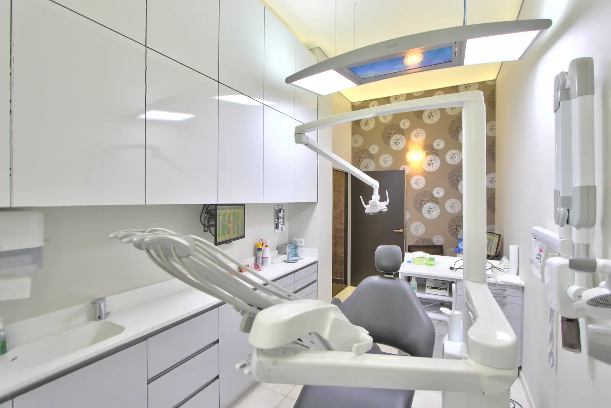

Pédodontie
Des soins adaptés aux enfants, de la première dent à l’adolescence.
Dr Sophie de ScorraillePédodontie

Qu’est-ce que la pédodontie ?
La pédodontie est la dentisterie de l’enfant et de l’adolescent.
Elle tient compte de la croissance, des dents de lait et des dents définitives qui se mettent en place, mais aussi de l’âge et du caractère de chaque enfant. Le temps est pris pour expliquer, montrer et mettre l’enfant en confiance avant chaque geste.
À chaque âge ses besoins
Choisissez l’âge de votre enfant.
Les premières dents
Les premières dents apparaissent en général vers six mois. Elles se nettoient dès leur apparition.
- Brossage
- Deux fois par jour, par un adulte, avec une petite brosse souple.
- Dentifrice
- Fluoré à 1 000 ppm, une simple trace, de la taille d’un grain de riz.
- Au cabinet
- Une première visite vers l’âge d’un an.
- À éviter
- Que l’enfant s’endorme avec un biberon de lait ou de boisson sucrée.
Toutes les dents de lait sont là
Vers trois ans, les vingt dents de lait sont en place. Les contrôles annuels se poursuivent.
- Brossage
- Deux fois par jour, l’enfant commence, un adulte termine.
- Dentifrice
- Fluoré à 1 000 ppm, la taille d’un petit pois.
- Au cabinet
- Un contrôle par an. L’examen de prévention M’T dents est proposé chaque année de 3 à 24 ans.
- À surveiller
- Le pouce ou la tétine, qu’il vaut mieux arrêter vers cet âge.
Les dents définitives arrivent
Vers six ans, les premières molaires définitives sortent derrière les dents de lait, souvent sans qu’on les remarque. Les dents de lait tombent peu à peu.
- Brossage
- Deux fois par jour, deux minutes. Un adulte vérifie encore.
- Dentifrice
- Fluoré, de 1 000 à 1 450 ppm à partir de 6 ans, selon l’avis du praticien.
- Au cabinet
- Un contrôle par an et, si besoin, le scellement des sillons des molaires définitives.
- À surveiller
- L’alignement des dents, pour repérer tôt un besoin d’orthodontie.
L’adolescence
Les deuxièmes molaires sortent vers douze ans. Les appareils d’orthodontie, le sport et l’alimentation demandent une attention particulière.
- Brossage
- Deux fois par jour, avec des brossettes en cas d’appareil d’orthodontie.
- Dentifrice
- Fluoré, de 1 000 à 1 450 ppm selon l’avis du praticien.
- Au cabinet
- Un contrôle par an et, si besoin, le scellement des sillons des deuxièmes molaires.
- À surveiller
- Les boissons sucrées ou acides, et un protège-dents pour les sports de contact.
En savoir plus
Tout ce qu’il faut savoir pour les dents de votre enfant.
- La première visite Quand venir, comment préparer votre enfant et comment se passe le rendez-vous. En savoir plus
- Les soins des dents de lait Pourquoi les dents de lait comptent, et comment elles se soignent. En savoir plus
- La prévention Brossage, dentifrice, alimentation et scellement des sillons. En savoir plus
- Conseils aux parents Tétine, poussées dentaires, chocs sur les dents et sport. En savoir plus

Votre praticienne
Dr Sophie de Scorraille
- Pédodontie
Les soins des enfants se font à leur rythme. Lors des premières visites, l’enfant découvre le fauteuil et les instruments avant tout soin.
Questions fréquentes
À quel âge la première visite ?
Vers un an, ou dans les mois qui suivent l’apparition des premières dents. Une visite précoce sert surtout à conseiller les parents et à habituer l’enfant.
Faut-il soigner les dents de lait ?
Oui. Une carie sur une dent de lait peut faire mal, s’infecter et abîmer la dent définitive qui se forme dessous. Les dents de lait gardent aussi la place des dents définitives.
Les soins des enfants sont-ils remboursés ?
Les soins dentaires des enfants sont pris en charge par l’Assurance maladie. Chaque année de 3 à 24 ans, l’examen de prévention M’T dents est intégralement pris en charge (Assurance maladie et complémentaire santé), sans avance de frais.
Un premier rendez-vous pour votre enfant
Appelez le cabinet pour convenir d’un moment calme, de préférence quand votre enfant est reposé.